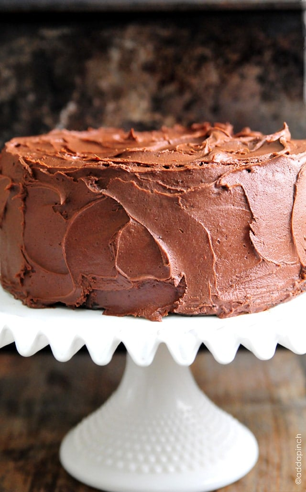

Chocolate Cake Recipe

This is a recipe for a very good chocolate cake.
It is quick and easy to make and is very rich and sweet. It can be used for many special occasions.
Ingredients:
- all-purpose flour
- sugar
- unsweetened cocoa powder
- baking soda
- salt
- espresso powder
- milk
- oil (can use vegetable, canola, or melted coconut oil)
- eggs
- vanilla extract
- boiling water
Steps:
- Preheat the oven to 350°F
- Spray two 9-inch pans with baking spray or butter and flour them
- Add flour, cocoa, baking powder, baking soda, salt, and espresso powder to a large bowl. Whisk to combine
- Add milk, vegetable oil, eggs, and vanilla to the dry ingredient mixture. Mix on medium speed until well combined
- Reduce speed and carefully add boiling water to batter until well combined
- Evenly distribute cake batter between the two prepared cake pans
- Bake for 30-35 minutes, or until a toothpick inserted in the center of the cake comes out clean
- Remove from oven and cool for 10 minutes, then remove from pan and cool completely
- Frost with a frosting of your choosing